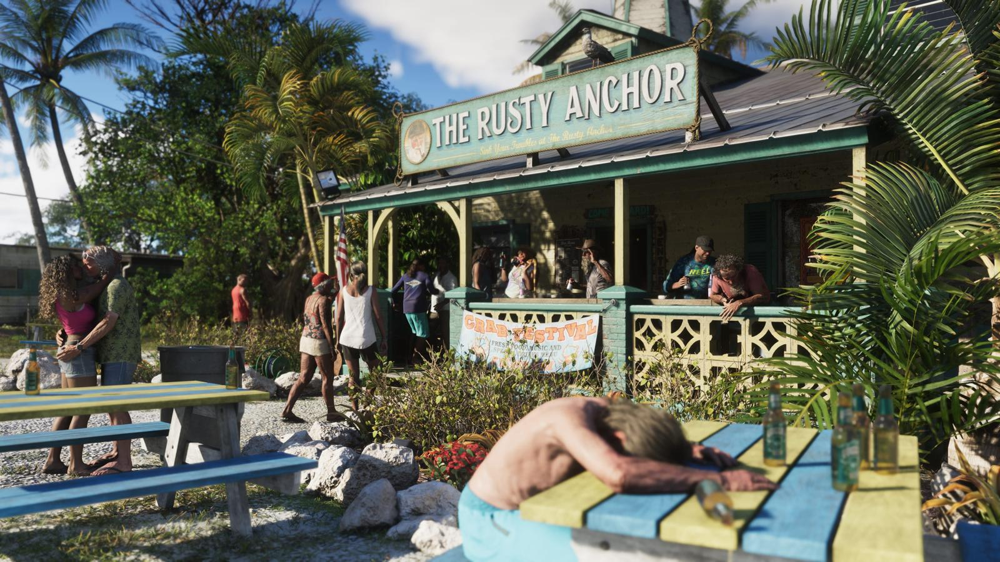

Слух: у GTA 6 будет коллекционное издание
Обновлено:

- Слух: Rockstar готовит коллекционное издание GTA 6.
- Источник — не инсайдер, а список товаров платёжного сервиса Xsolla.
- Подтверждено в тот же день: набор за $399,99, без игры.
- Остальной мерч из утечки (футболки, кепки) пока не в продаже — ждём.
Подтверждено 24 сентября: Rockstar выпустила «The Goodtime State — Vice City Collection» за $399,99. Но игры в наборе нет — и это главный сюрприз.
Что говорят
Утечки обычно рождаются в тёмных углах интернета: анонимный аккаунт, размытое фото, «мой знакомый работает в Rockstar». Эта пришла из кассы.
24 сентября на форуме GTAForums дата-майнеры выложили список товаров, который они нашли в каталоге Xsolla — платёжного сервиса, через который работает магазин Rockstar. У каждого товара там есть свой артикул (SKU), и некоторые артикулы появились раньше, чем товары на витрине. В списке было около 55 позиций: одежда, сумки, наклейки, даже баскетбольный мяч. И одна строчка, из-за которой всё и завертелось, — «The Goodtime State — Vice City Collection».
Параллельно игроки напоминали: магазин Rockstar незадолго до этого обновили — появилась возможность добавлять в «хотелки» товары, которых нет в наличии. Выглядело как подготовка к большой распродаже мерча.
Что известно на самом деле
Через несколько часов Rockstar открыла предзаказ. Утечка совпала с реальностью почти построчно — вплоть до ламантина на стопке.
| Что было в утечке | Статус |
|---|---|
| Коллекционный набор «The Goodtime State — Vice City Collection» | 🟢 Подтверждено: $399,99 / £349,99, доставка 19 ноября |
| Фигурка аллигатора Макки, очки Oakley, кепка New Era | 🟢 Подтверждено — в составе набора |
| Копия игры внутри набора | 🔴 Нет — Rockstar прямо пишет, что игра не входит |
| Отдельные футболки, кепки и другой мерч | 🟡 Пока не в продаже |
Самое интересное — не цена, а то, как собран набор. Это не «мерч с логотипом», а сувениры из места, которого не существует: сумка Leonida Keys, стопка из Вайс-Сити, постер-карта штата. Как будто ты вернулся из отпуска во Флориде — только Флорида нарисованная.
Выбор животных для набора — не случайность. Аллигатор с 1987 года официально считается символом-рептилией штата Флорида, а ламантин с 1975-го — официальным морским млекопитающим штата. Rockstar взяла два настоящих символа Флориды и превратила их в персонажей своей вселенной — аллигатора Макку и ламантина Чанки. Кто они в игре — талисманы, герои шоу или что-то страннее, — студия пока не объясняет.
Ещё одна деталь для тех, кто помнит Vice City 2002 года. Зеркальце, лезвие-брелок и маленькая ложечка — узнаваемый набор-намёк на Майами 80-х из фильмов вроде «Лица со шрамом», который вдохновлял ещё оригинальную Vice City. А очки Oakley Frogskins — модель, которая появилась в 1985 году, как раз в эпоху той самой первой Vice City.
Наш вывод
🟢 Подтверждено. Коллекционное издание есть — но это не издание игры, а коробка сувениров. Сама GTA 6 продаётся отдельно: Standard за $79,99 или Ultimate за $99,99 — сравнение в статье Издания и цены GTA 6: Standard и Ultimate. Отдельные футболки и кепки из утечки пока не появились — как только Rockstar их выпустит, обновим статус.
Что игроки думают о цене — Коллекционка GTA 6 за $400 без игры: что говорят игроки.
Источники: Insider Gaming; Destructoid; VGTimes; GamingBible; Push Square; Wccftech; Rockstar Games Store.